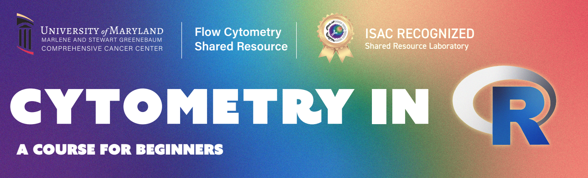

Cytometry in R: A Course for Beginners
Tentative schedule as of October 29, 2025. Please complete the interest form to stay in the loop as we finalize date and times.
Workstation Setup
Week 1: The main focus of this first session is ensuring everyone’s computer is properly setup, and to start building familiarity with the infrastructure used for the rest of the course.
Participants install R, Rtools, Positron, Quarto, and Git; then setup and link a GitHub account. Introduces the concept of version control, and how in combination with Quarto it will be used for submitting optional take-home assignments. Finally, R packages in the flow cytometry context are discussed, including where they can be found (CRAN, Bioconductor, GitHub) and how to install them.
File Paths
Week 2: This second session covers file paths, and how they differ between operating systems (Linux, macOS and Windows). The goal is by the end of the session everyone can programmatically locate where there .fcs files are stored, list any other items present in the same folders, and assign alternate storage locations.
Inside an .FCS file
Week 3: This third session revolves around breaking open an .FCS file and seeing what are the individual components that make it up. In the process, we cover the concepts of types of data structures within R (vectors, matrices, data.frames, list).
Introduction to the Tidyverse
Week 4: Within this session, we explore how the various tidyverse packages are utilized to reorganize rows and columns of data in ways that are useful for data analysis. We will primarily work with the MFI expression data we isolated from within the .fcs file in the previous session, identifying and isolating events that meet certain criterias. We introduce the concepts behind “tidy” data and how it can improve our workflows.
Gating Sets
Week 5: As part of this session, we learn about the two main flow cytometry infrastructure packages in R we will be working with during the course, flowcore and flowWorkspace. Throughout the session, we will compare how they differ in naming, memory usage, and accessing .fcs file metadata. We additionally explore how to add keywords to the metadata for use in filtering specimens of interest from the larger set of files.
Visualizing with ggplot2
Week 6: During this session we provide an introduction to the ggplot2 package. We will take the datasets we have collected from the previous sessions and see how in varying in different arguments at the respective plot layers we can produce and customize many different forms of plots, focusing on both cytometry and statistics plots. We close out providing links to additional helpful resources and highlight the TidyTuesday project.
Transformations and compensation
Week 7: For this seventh session, we explore how to transform (ie. scale) flow cytometry data in R to more ressemble the plots we encounter using commercial software. We also explore how to apply compensation to conventional flow cytometry files.
It’s raining functions
Week 8: This eight session takes a detailed walk-through of what is a function, how their arguments work, and how to create your own to do useful work and reduce the number of times code gets copied and pasted. We also cover how to use your own functions with walk and map from the purrr package.
Downsampling and Concatenation
Week 9: This ninth session explores how to downsample your fcs files to a desired number or percentage, and how to concatenate different samples together for use in downstream applications. We also briefly review how to create a new .fcs file.
Spectral Signatures
Week 10: In this tenth session we explore extracting fluorescent signatures from our samples, both beads and cells. We build on prior concepts to isolate median of the positive and negative gates. We finally wrap up showcasing various packages that have added ease of life for various steps.
Similarities and Hotspots
Week 11: Utilizing the spectral signatures we retrieved in the prior session, we evaluate spectral similarity using cosine values and panel complexity with kappa. We finally evaluate collinearity by implementing the hotspot matrix.
Retrieving data for Statistics
Week 12: Leveraging increasing familiarity with the various packages, we will retrieve the gates from our GatingSet and work on programmatically derriving metrics that are typically used for statistical analysis in cytometry. We will create a couple additional ggplot style plots to add to our arsenal.
Unmixing in R
Week 13: This session goes for a reach goal for many, how to carry out unmixing of raw .fcs files using the spectral signatures we have isolated from our unmixing controls. Once we evaluate the necessary internals, we explore how various cytometry packages have implemented their own individual approaches at tackling this, and various limitations they have encountered.
Automated Gating
Week 14: In this session, we explore openCyto and it’s automated gating templates. We explore various gating implementations and work on learning how to set the gate constraints to work for our own projects. We utilize a cell count dataset for this purpose.
Cleaning Algorithms
Week 15: In the span of this session, we will directly compare how various Bioconductor data cleanup algorithms (namely PeacoQC, FlowAI, FlowCut, and FlowClean tackle distinguishing and removing bad quality events. We will see how they perform with previously identified good quality and horrific quality .fcs files. We will whether the implemented algorithmic decisions made sense, and how to customize them within our workflows to achieve our own desired goals.
Clustering Algorithms
Week 16: We explore unsupervised clustering approaches, primarily FlowSOM, Phenograph, and kmeans. We investigate additional ways of linking these approaches to our manual gating to evaluate the final clusters.
Normalization vs. Batch Effects
Week 17: We investigate how to normalize cells using CytoNorm and CyCombine. We evaluate ridge plots and other approaches to carry this out further.
Dimensionality Visualization: Is any of this real?
Week 18: We perform tSNE and UMAP in R for our raw and unmixed samples. We also walk through the steps of linking to a Python installation in order to run PaCMAP and Phate visualizations.
Annotating your unsupervised clusters
Week 19: We explore various existing implementations of annotation, that can be modified to label our various clusters and islands. We investigate how these function under the hood in their decision making.
The Art of GitHub diving
Week 20: While we have been building familiarity with GitHub over the course, there is an art to investigating a new potential package to see if its worthwhile. This session we walk through the main points of how a Github repository is structured, and how to evaluate and use it, submit bug reports, etc.
XML files all the way down
Week 21: The majority of experiment templates and worksheet layouts are actually .xml files. These like other files, can be treated as lines of code, that we can create or edit similar to what we have been doing in the rest of the course. In this session, we test out our new problem solving abilities to retrieve data from SpectroFlo and Diva files to monitor how our cytometers behaved the previous week
Utilizing Bioconductor packages
Week 22: Many of the R packages for Flow Cytometry introduced during this course are also packages available via the Bioconductor project. We take a look at what makes Bioconductor unique compared to packages found on GitHub and CRAN, explore how to merge our workflows with their specific infrastructure, and explore some useful packages for downstream analysis that we haven’t had time to yet explore.
Building your first R package
Week 23: For most of this course, we have been working using R packages that others have built. In this session, we leverage all the hard work you have already put into the small arsenal of functions and combine them together to create your first R package. We will discuss the individual pieces of an R package, the importance of the namespace file, and how to generate help page manuals to refer back to what your individual function arguments do.
Reproducibility and Replicability
Week 24: As you progressed through the course, you notice we constantly bring up the importance of making both your workspaces and code reproducible and replicable. But what exactly does this mean, and are their ways to do this more efficiently? We explore a couple community-led efforts in the cytometry space and troubleshoot new ways to ease their implementation into our existing workflows.
Validating algorthmic tools
Week 25: It’s always fun learning about new cytometry analysis algorithms at a conference, given we know how much effort goes into creating them. The challenge is how to best evaluate whether their claims hold up over time. While understanding exactly why something involves a boatload of specific knowledge, noticing when the outputs doesn’t make sense in your biological context is achievable. We discuss a few show-case examples and work through exploratory data analysis options that would have helped uncover the issues earlier.
Everyone get’s a Quarto Website
Week 26: In this session, we take the knowledge of R code and .qmd documents that we have accumulated over the course, and use them to create our own website using Quarto. We discuss the additional files needed to render the website, how to configure abd update it, and finally set up a new GitHub page to host it for us.
Open Source Licenses
Week 27: In this course, we have relied heavily on open-source software to create our own data analysis pipelines, and have some recollection of the various names of licenses each R package was licensed under. But what do all those different names mean in the end? We take a look at the ecosystem of free and open-source licenses, and evaluate what each means for us as users and developers.
Databases and repositories
Week 28: While many of us are accustomed with working with large datasets of our own making, increasingly many are working with increasingly large datasets and repositories. How you navigate and manage to retrieve .fcs files and relavent metadata from these repositories can be daunting for the uninnitated. In this section, we take a look at ImmPort (and maybe FlowRepository if it is reachable that day)
Google Chrome Inspects the web page
Week 29: In this session, we explore the broader topic of web-scraping and APIs in general. We highlight useful packages, and conventions in place to enable retrieval of useful data, while not being responsible for the crash of someone’s server. We finish by providing list useful resources for those interested in learning more.
Future Directions
Week 30: In this final (planned) session, we revisit our challenge problems from the beginning of the course. We also discuss future topics and additional resources that proved helpful.